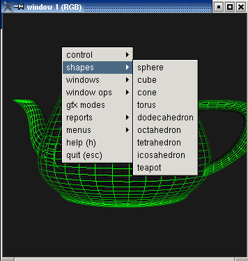
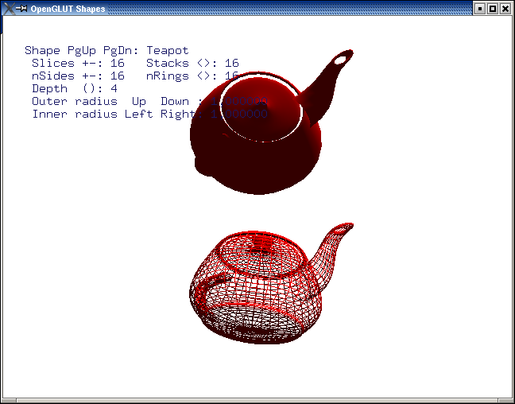
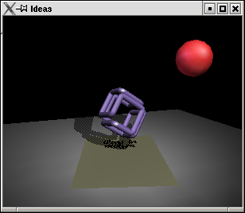
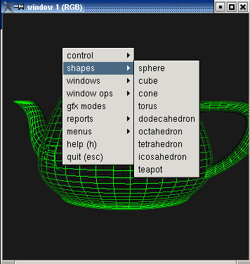
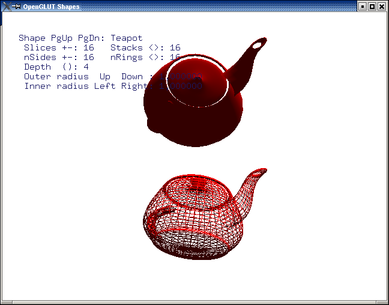
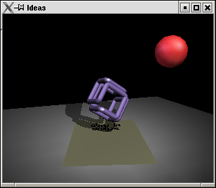

Screenshots
Everybody loves screenshots, so here are few

GLUT bigdemo running on GtkGLUT (without recompilation)

OpenGLUT Shapes - OpenGLUT/FreeGlUT demo running on GtkGLUT

Ideas in Motion - GLUT demo running on GtkGLUT
Everybody loves screenshots, so here are few

GLUT bigdemo running on GtkGLUT (without recompilation)

OpenGLUT Shapes - OpenGLUT/FreeGlUT demo running on GtkGLUT

Ideas in Motion - GLUT demo running on GtkGLUT